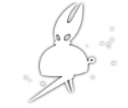
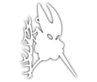
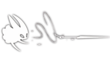
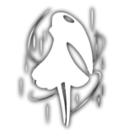
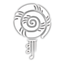

SilkSong has many abilities. They are the following
Enables dashing in ground and midair and can be unlocked by interacting with the altar found in the top section of Deep Docks.

Enables gliding or floating while in midair and can be unlocked after completing the Seamstress' Flexile Spines wish in Far Fields.

Enables wall cling and wall jumps. Slides down walls when retaining wall cling and can be unlocked by interacting with the altar at the top of Shellwood.
Plays music. The music can unlock certain doors and NPC interactions and can be unlocked after defeating Widow in Bellhart.
Enables charging attacks for a more powerful strike and is Unlocked after speaking to the Pinstress in Blasted Steps.

Enables grappling onto rings. Can drag Hornet towards enemies in combat and can be unlocked by interacting with the altar found in The Cauldron at Underworks.
Enables jumping in midair and can be unlocked by playing the Needolin next to the ancient tuning mechanism at the top of Mount Fay.

Throws the needle upwards until it hits a surface, then drag Hornet to its location. Head to the rightmost part of the Abyss and jump down the hole to acquire this ability.
Transports Hornet to the Bell Beast's current Bellway location. To unlock it you must defeat the Bell Eater below the Grand Bellway in Choral Chambers during Act 3.

Draw out memories of Pharloom's forgotten past. Complete the Spell Seeker Act 3 quest to unlock